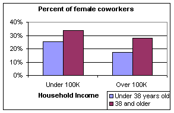
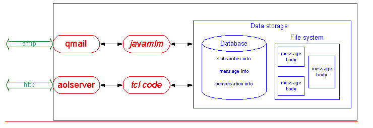

Systers: Contradictions
in CommunityJavamlm: A
Customizable Mailing-List Manager (abstract)
Sun Microsystems, Inc.
Palo Alto, CA 94303
Robin.Jeffries@sun.com
Lee Sproull
Leonard N. Stern School
New York University
New York, NY 10012
lsproull@stern.nyu.edu
Sara Kiesler,
Jennifer Goetz
Human-Computer
Interaction Institute
Carnegie Mellon
University
Pittsburgh, PA
15213
kiesler@cs.cmu.edu,
jgoetz@cs.cmu.edu
Ellen SpertusEllen Spertus
5000 MacArthur Blvd.
Oakland, CA 94613
spertus@mills.edu
Sun Microsystems,
Inc.
901 San Antonio Rd.
Palo Alto, CA 94303
Robin.Jeffries@sun.com
Unmoderated
computer-mediated discussion groups suffer from the paradox that the more
successful they are, the more difficult they are to use and administer because
of the increasing number of users and discussions. Traditional solutions to this problem, such
as creating static subgroups or requiring Web access, are not always
desirable. We discuss the problems with traditional
solutions and present an approach to scaling online communities that we believe
increases, rather than decreases, communication opportunities without
overwhelming users or administrators. Our
system, Javamlm, has been built and is undergoing its first user test, which
will be completed in late June. We
report on the design and implementation of the system. Our final paper will include results of
the user test.Systers is a 14-year old online community for
technical women to support each other and share information. Explosive growth
in the membership (from an initial group of 12 to over 2300 today)
and of the Internet generally, has
changed the nature of this community. Systers has
always functioned as a self-moderated mailing list, to which any member may
post at any time, but this model becomes less tenable with greater size. We
report empirical research that we used to redesign Systers in a manner that
retains its best features –
intimacy, comprehensiveness, and diversity –
without the exponential increase in traffic that normally accompanies list
growth, allowing Systers to serve an increasingly diverse membership, balancing
the needs of newcomers, who desire more and broader discussion and services,
and long-time members, who tend to prefer limited interaction. We are beginning
the first field test of our new system and will have empirical results by the
camera-ready deadline.
Electronic communities, diversity, networks
(social), networks (digital), web technology, computer-mediated communication,
electronic mail, groupware
Systers [2] is an unmoderated
email list for women in computer science, originally created in 1987 for 12 women. The list has been
tremendously successful at creating a community for people who had felt
isolated and
has grown to include over 2300 members in 38 countries. As Systers has grown,
however, it has
lost hundreds of members, especially senior women, because of the increased message volume that came
with
increased membership. Additionally, members have felt less free to post
to the entire list, instead responding directly to the sender of a message
or not at all, reducing the sense of community and the utility of the
list. Our goal is to
provide a better format for such a large community than an unmoderated email
list, while keeping the features that make Systers successful. Despite
programs and legislation that have opened professional opportunities to women,
women accounted for just 15% of the Ph.D. degrees in computer science in 1998, and
only 8% of full professors in computer science were women [1].
These statistics reflect trends in the hard sciences and engineering more
generally; women have comparatively low participation rates and professional
mobility.
The electronic community of Systers was begun to
encourage technical women’s persistence and advancement by helping technical
women help one another. Systers was started in 1987 as a small electronic
mailing list for 12 women who met at an academic conference on operating
systems, thus the name “Systers.” Today Systers is maintained by the Institute
for Women and Technology [2],
headed by Anita Borg, the founder of Systers. Online interactions
with other technical women through Systers has been of great benefit to
thousands of female computer scientists, addressing problems related to
isolation and adverse attitudes, increasing members’ access to job information
and contacts, and even mobilizing change.
The current challenge is to prevent Systers from collapsing under the
weight of its own success.
The current technical infrastructure of Systers
began as a research project in the use of databases for collaboration. With the
growth of the Internet and the Web, this infrastructure supported a substantial
growth of Systers to its current membership of over 2300 members from 38
countries, including Niger, Bolivia, and Russia. With growth came diversity of
interests and varying access to computer resources and colleagues. Growth also altered the sense of close
community that existed when members were few in number, met face-to-face at
meetings, and knew one another well. Norms of communication changed. Almost all
Systers members read all posted messages in email as they come to their
mailboxes. Today these messages arrive in a context of heavy Internet traffic.
Systers members we sampled receive on average 268 email messages each week and
send nearly 80. As a result of increasing communications and members, Systers
has had an informal policy of limiting discussion messages and topics. Limiting
communication, however, also constrains what a virtual community can do, since
all transactions are based on communication.
A redesign project is currently underway to improve
the experience of community within Systers. As part of the redesign, we have
been conducting research with Systers members to learn better who the members
are, what leads them to Systers, and what they need and want. We began with a
random sample cross-sectional survey of Systers members. We next instituted a
survey of new members as they subscribed to Systers. We plan to follow up with
these newcomers in a year. We also plan an exit survey of those who leave
Systers. We have completed a preliminary design and implementation of a new
structure for Systers. We report here
what we have learned about the Systers community and its members thus far and
describe the redesign. By the time of
the camera-ready deadline, we will describe the results of Systers’ adoption of
the new technology.
THE SYSTERS COMMUNITY
Although the business community today is interested
in creating “electronic communities” for the purpose of increasing revenue [3],
we believe that a successful electronic community should promote the welfare of
members [e.g., 4, 5].
As the introduction to Systers states, the intent of Systers is to be “a safe and
comfortable place [for its members] to discuss important issues.”
All electronic communities create and maintain
territorial boundaries to signal who is and is not welcome. Systers maintains
strong community boundaries through its membership rules. As it describes
itself:
Systers is a private
organization of professional women in technical areas of the field of computing
– i.e., with a degree (or currently a student) in Computer Science or Computer
Engineering, or holding an equivalent technical position in industry, academia,
or government. This group is not intended for those in marketing, writing, or
administrative positions within a computer company, or studying or reporting
about women in the computer industry, or just interested in the problems of female
computer professionals. It is for technical women. It is not intended for men,
however sympathetic, as experience has shown this tends to dilute the purpose
of a special forum just-for-us, where we don't have to spend energy explaining
issues to a different point of view.
(For the rationale behind limiting membership by
gender, see [6].) A feature distinguishing electronic communities
from narrower electronic groups is that the former
have more varied and differentiated functions and activities. Systers facilitates both unstructured and
structured communication (such as a weekly job postings compilation) both
online and off. Occasionally, members in a particular geographic location
(e.g., Bay Area Systers) or members attending a particular conference arrange
face-to-face get-togethers. Three, now separate, electronic groups first “met”
and coalesced on Systers: Systers-Students, Systers-Academia, and
Systers-Out. Much of the work
organizing the first Grace Murray Hopper conference was done via Systers.
Community norms and “rules of the road” create and
reinforce behavioral boundaries, signaling the kinds of behaviors that the
community encourages or discourages. Because the behavioral repertoire in
electronic communities is limited mostly to written communication, most of the
norms and rules are also related to written communication: What are appropriate
(and inappropriate) topics? Styles of discourse? Styles of interaction? Systers
is explicit about its rules for internal communication, as evidenced by
guidelines posted in its introduction:
DO NOT
FORWARD Systers list mailings without first obtaining permission from the
originator of a message.
DO NOT
USE OR DISSEMINATE information in Systers messages without permission of the
original sender.
Personal defamation or character
assassination of individuals or by name is an inappropriate use of the list.
Information that is possibly libelous or slanderous may not be posted.
With the exception of the posting of
resumes and certain job opportunities, Systers may not be used for any
advertising or commercial purposes.
Frequently Systers ask for opinions over
the list, collect them and then collect or summarize and redistribute them to the
list. Collections should not be sent
beyond the list unless the collector states that the message can be
disseminated. The collector should get permission from every contributor before
indicating that the message can be passed along.
(http://www.Systers.org/mecca/cgi-bin/new- req.tcl.
Visited 3/3/00.)
As Systers and the Internet grew, the community
adopted two important normative mechanisms to organize and control
communication. Both norms are conveyed
primarily by example. The first norm is to answer requests for advice by
replying to the sender alone, who then collects and sends a summary of replies
to the community as a whole. This practice is also common in technical and
scientific distribution list groups, in which members post technical questions
or questions about the literature of the field. They then create summaries of
the replies they receive and post them to the entire list. This practice for
disseminating information contrasts with the social discussion and
give-and-take one finds in threaded forums, such as Usenet. Nearly 50 years
ago, experimental laboratory comparisons of analogous structures were a hot
scientific topic. So-called “wheel” or “star” networks often proved to be
efficient, but member satisfaction was highest in “all-channel” networks [e.g.,
7]. Thus, the norm for limiting communication is
not without cost.
A second important norm is that Systers topics
should be limited to issues related to being a technical woman. The following
gives a flavor of appropriate topics:
How
to negotiate a good maternity leave arrangement, if your company doesn't have
an official policy.
Barbie
software, and what it implies for getting girls interested in computing.
I'm
thinking of going back to school. These are my goals. What kind of program will
help me meet them?
Here
is a situation I am having with a male colleague at work; how do I deal with
it?
Let’s
create women-oriented versions of “real engineer” jokes. An example: Real engineers figure out algorithms to
minimize thread usage when doing counted cross stitch.
Keeping
up with technology vs. time off for family.
Off topic messages include such items as, “How do I
do X in perl?” (technical questions) and “Should I send my kid to private
school?” (general child care). When off-topic messages are posted, a member or,
occasionally, the founder, will post a response reminding the poster as well as
the entire community of topic norms.
Nevertheless, it remains an important problem, both in wasted bandwidth
and in frustrated members who disagree on what topics are appropriate.
Systers’ discourse norms substantially reduce daily
message traffic in comparison with that of groups whose norms are to tolerate
more digression and/or replies to the group as a whole. Systers’ daily message traffic ranges from 0 to 20, a
comparatively small number compared to that of many electronic groups and
communities. Indeed, many non-members
have trouble believing that such a large unmoderated mailing list has such a small
volume. Systers members in our survey
reported posting significantly more messages to other favorite electronic
groups, even to technical distribution lists.
The externally visible structures and processes of Systers described
above comprise the context for community interaction. The life of the community is to be found in its interacting
members, at least some of whom feel emotional affiliation, a sense of identity,
and a sense of obligation to the community. Our survey was meant in part to
capture these feelings and perceptions.
SURVEY OF MEMBERS
We obtained systematic information about Systers
members through a random sample survey. In December 1998, after obtaining
permission from the Systers membership, we randomly selected 1000 subscribers
from the rolls of Systers members. We obtained usable email addresses and
successfully sent email to 819 of these members, asking them to participate in
an online survey contained in the message. The survey consisted of 80 items,
nearly all presented in checkbox format. The survey requested information on
the member’s demographic attributes, technical environment, online groups,
social ties, work situation, and preferences on the redesign of Systers.
We received 367 completed surveys, a 45% response
rate. The respondents include women who were members at Systers’ inception as
well as women who joined through 1998; median tenure in Systers in the sample
was 3 years (mean = 3.8). We next report the demographic attributes of
respondents.
Mainstream with Diversity
Figures 1 and 2 show how Systers in the sample were
distributed by age and education; the median age was 38 years. Most Systers
were employed full time, married, white, U.S. professionals. As would be
expected, older, married, better educated,
fully employed Systers tend to have higher household incomes (rs = .16 to .28).
A large minority (42%) had household incomes above $100,000. However, some
lived in households earning less than $25,000 per year (5%), were students
(15%), single (25%), nonwhite (13%), or non-U.S. based (13%). These demographic
patterns were useful in predicting certain work situations and preferences of
Systers members, as we show below.
Social Ties
We measured Systers’ social ties using 5 survey
items: size of one’s local social circle, number of friends one talks with
about work, number of email messages received and sent per day, and number of
online groups. These factors were highly correlated (rs = .36 to .45). They
were also independent of demographic factors and work situation factors. Those
who are sociable and have many friends and colleagues would be likely to enjoy
communication, have more communication partners, and be exposed to more
opportunities for communication whether in the real world or online. There is
some evidence that those with fewer social ties in the real world seek them
online [9]. If so, more real world social ties might be
unrelated or negatively correlated with online communication, and posting
should be predicted by an absence of real world ties. This may be true in other
cases, but we did not see it in our data. Having more social ties and talking
with more friends about work was correlated modestly but positively with
posting in Systers and in other online groups (rs = .12 to .15). As we see
below, posting in Systers is indeed motivated by problems, but they are work
situation problems rather than an absence of people to talk with that seem to
spur more communication in Systers.
Work Situation
We measured four attributes of the work situation
of Systers members: size of the work group, percentage of female coworkers,
rated work satisfaction, and rated equity of the work environment using 4 items
adapted from the Equitable Work Environment scale [8].
Work environment equity was strongly correlated with more work satisfaction (r
= .40). Though having more female coworkers was associated with higher ratings
of perceived equity (r = .18), a higher percentage of female coworkers also was
characteristic of older Systers and those having less education and lower
income (see Figure 2). The statistical regression model using all demographic
variables to predict the percentage of women, and controlling for size of
workgroup, is a significant model: R2 =
.15, df [240], p < .001; where [less] education (F[1,240] = 10.7, p <
.01), [greater] age (F[1,240] = 20.1, p < .001); [less] income
(F[1,240]=6.9, p < .01) predict a higher percentage of women in the
workplace. In sum, our measures of the work situation tap two contradictory
facets of work situation quality. A higher percentage of women coworkers is
associated with higher perceived equity, but also with lower job salary.
Participation in Systers
Systers exists as an active community insofar as
members communicate. Among respondents, just 38% had posted at least one
message to the community in the past year; the mean was 1 message, with a range
from 1 to 20. We tested a hypothesis that active participation would be
motivated by work-related needs, that is, a more negative work situation or
junior status in the profession. We used a series of regression equations that
also included demographic and social variables as controls, successively
deleting insignificant variables. A significant predictive regression model of
posting frequency in Systers (R2 =
.04, F[4,293] = 3, p = .05) included (lower) age (n.s.), (higher) number of
people one talks with about work (F[1,293] = 2.7 p < .10), (higher) percent female coworkers (F[1.293] = 5.8,
p < .05), and (more) work environment inequity (F[1,293] = 4, p < .05).
See Figure 3 for a summary of the results across models we explored. Our
results are consistent with the hypothesis that more active participation in
the online community is motivated by work-related needs.
Attitudes about Systers
We asked respondents whether they felt Systers was
interesting, helpful, supportive, and a community. Respondents answered on
3-point scales (e.g., not interesting, somewhat interesting, very interesting).
Answers were heavily skewed towards the positive side of these scales, leaving
little variance. Those in a less equitable work environment tended to say that
Systers is more helpful (F[1, 327] = 5.3, p < .05); controlling for
education, those more junior in their career tended to feel Systers is more of
a community (F[2,311] = 3.1, p < .05).
Systers members with children felt less positively
about Systers on all these measures (ps < .10 to .001), possibly because
broad discussions of child raising and child care
not closely related to being a technical woman have been discouraged in the
group.

A common general solution to heavy volume on
mailing lists is moderation, which can be performed top-down by a
small set of administrators or bottom-up through collaborative filtering. While the most obvious cost of moderation is the human overhead
required, a more fundamental problem is that moderation schemes limit diversity through the “tyranny
of the majority”. A topic of little interest to the majority may be
of great interest and value to a minority. A better scheme (which we describe
below) would
allow users to customize which messages they see.
A conventional
alternative to moderation is the creation of static subgroups of
Systers interested in particular topics. There could be technical groups
focused on Web design, groups discussing how to best deal with maternity leave,
or support groups for pre-tenure academics. However, while an
individual Syster may not be interested enough in maternity leave to join a
group that discusses that exclusively, part of what members find
valuable is hearing about other women's issues in a wide range of
areas (especially if they might affect her in the future). Thus, completely eliminating the
sharing of information about maternity leave with the broader group lessens the value of
the list.
In the limit, there would be no common discussion among the entire group, just
a vast collection of special interests. For these reasons, we rejected the idea of relying primarily on static sublists.As
Systers grows, either the restrictions on topics and volume must become even
more stringent or the volume of postings will grow, probably exponentially.
Right now, the current volume of Systers is an average of less than 1 posting
per member per year. This volume is extremely low for a community of this type,
and is primarily driven by the Systers norms of restricting topics and of
sending responses to individual Systers and (sometimes) publicly summarizing
the responses received. Recently, some Systers have posted public replies and
encouraged what they consider to be important discussions. However, in informal
discussions, the most common reason given for leaving Systers is that the
individual cannot handle the volume of messages received.
We are contemplating several ways of enabling
Systers to customize what postings they receive. All such solutions have
advantages and drawbacks, and we will probably have to combine all three
approaches to satisfy the full membership. The most obvious way to support
customized views is to go to a Web-based, newsgroup-like format, where
Systers can browse the topics that interest them. Because is it not email
email-based,
this solution would be unacceptable to many long-time Systers, who have expressed
a preference for email, as well as to members in poorer countries with less
Internet connectivity. It
also removes the immediacy of the information, since most Systers would check
the web site at most daily or weekly, which will wouldcertainly
change the sense offeel of the
community.
in some ways.
We have a solution that we believe meets many of our design goals. Our system, called javamlm, is oriented around conversations. Members are able to subscribe to
or unsubscribe from individual conversations. The
opening message of a conversation would be sent to all members. When a member signs up for Systers, she
specifies whether she wants to see all messages or only the first message of
each conversation. The default behavior is for users to be subscribed to
all conversations in order to mimic
the behavior of the current system. Users may also specify whether
they prefer to receive messages as plain text or as html.
A member creates a
new conversation by sending the
introductory message to systers-new@systers.org. Alternately, if she wishes to name
the conversation “conferences” rather
than having a system-assigned name, she would send her introductory message to
systers-new-conferences@systers.org. All members would then receive the first
message in this new conversation. Unless a recipient
specifies otherwise, her default preference (e.g., “view all messages in new conversations”), would then be in
effect. If she wishes to override her default
preference, she
clicks on an embedded link. If she
wishes to contribute to the conversation, she simply replies to the message and the message is
properly directed. Figure 1 shows a sample
message as
it appears to the sender and recipient.
Planned future
functionality would give users the option of seeing only the first
and last (summary) message in a conversation or receiving the messages as bundled digests. Observe that no administrator overhead is required
to honor users’ preferences.
Conversations could exist for a
limited period of time or be permanent.
Under
the current system, a volunteer collects job listings and posts them to the list
once per week. She also forwards them
immediately to Systers who are looking for employment. Having a “systers-jobs” conversation would eliminate the human administration
costs while increasing functionality.
An individual could specify any of the following behaviors:
·
Receiving each job posting immediately
·
Receiving digests of job listings on a daily,
weekly, or monthly basis
·
Never seeing job listings
At any time, she
could change her preference without going through a human administrator. Additional planned functionality would allow
users to receive messages containing individually specified keywords. For example, a member looking for a system administration
position might choose to see all messages containing “linux” and
“administration”. A second approach is
to provide Systers with a low cost way of indicating interest or lack of
interest in particular topics as the information comes in. Thus, if a posting
about images of women in technical advertising arrives, a member who is not
interested in the topic can indicate that lack of interest and would receive no
further responses to this posting. This approach appeals to most Systers, but
has a variety of technical challenges in its implementation.
A third approach is to create static
subgroups of Systers interested in particular topics. There might be technical
groups focused on Web design, groups discussing how to best deal with maternity
leave, or even support groups for women in the final stages of their thesis.
However, while a
individual Syster may not be interested enough in
maternity leave to join a group that discusses that exclusively, part of
belonging to Systers is hearing about other women's issues in a wide range of
areas (especially if they might affect you in the future). Thus, completely
eliminating the sharing of information about maternity leave with the broader
group (unless someone seeks the information out in the archives) dilutes what
Systers is about. In the limit, there would be no common discussion among the
entire group, just a vast collection of special interests.
In all of these
cases, the common core of discourse seen by everyone becomes less, and while we
don't have empirical data to that effect, we suspect that seeing less
communication lessens the feeling of community among the members. We need to
find other ways to strengthen that sense of community.
As we change the ways that Systers communicate, we
run the risk of lowering the sense of community within the larger group. We
hope to provide new functionality that will increase the feeling of community
in other ways. We believe that if we enroll a subset of the membership to play
special roles in keeping the community alive, this will make Systers seem like
a more intimate place for all members, and will increase the feeling of loyalty
that the volunteer Systers have to the community. It will also provide valuable
services. (See [2] for one discussion
of diverse roles in electronic communities.) Currently Systers has one example
of a special role–a member who collects job postings into a single message,
organizes it in a useful way, and sends it to the list weekly. This activity
cuts down on list traffic that is of interest only to a small (but ever
changing) subset of the community, and also makes the larger community aware of
the kinds of jobs available, what kinds of companies are actively recruiting
women, how companies describe themselves, and so on.
We expect to have volunteers in three broad areas. One
area is managing information resources. These volunteers
might collect and
categorize information pointers that Systers send to the community, or they
might scour the Web on their own for information in a particular category. The
second area is providing personal support in areas of special expertise. This
might range from a mentoring matching service (where we think of both the
matchmaker and the mentor as special roles) to 'greeters' who
help new members learn the ropes and feel comfortable in the community, to
someone who runs an 'electronic
book club' for
a set of Systers who want to read and discuss a particular book. The
third area is support for the Systers infrastructure itself, ranging from
adding new members to dealing with database backup and corruption to answering
members' questions about how to use the system. A goal, once these roles are in
place and supported by the Systers infrastructure, would be to have the
majority of members volunteer in one or more roles during their first 3 years
as a member.
We have built the Java
Mailing List Manager (javamlm), which provides the described functionality and
a number of additional features designed to minimize administration cost,
such as automatic
archiving
and variable envelope return paths [1], which simplify the handling of bounced messages. Figure 2 shows the structure of the system. Information about users, conversations, and messages in
kept in a relational database. We are
currently using Postgres as our database management system. We have also built a Web interface to the
database for
users and administrators using AOLserver and Tcl. All of these tools are open source, which will allow us to
release the entire package as open source.
The database schema
is shown in Figure 3. The Subscriber relation contains information about
each individual subscriber, such as name, email address, and whether or not to be subscribed to new
conversations. The Thread relation contains information about a
given conversation, including which subscriber created it and what
subject line was used. Meta-data
about a message is stored in the Message relation; the actual body is stored separately in a
file. Specifically, the
body of message 12000 would be stored in the files:
·
~systers/javamlm/archive/12000.text-plain
·
~systers/javamlm/archive/12000.text-html
The Subscription relation is used when a
subscriber wants to override his or her ordinary preferences for a specific
conversation. For
example, if subscriber 99 ordinarily receives all messages in conversations
by default, the following entry in the Subscription relation
would indicate that she wishes not to receive further messages in conversation
157:
|
subscriber_id |
thread_id |
preference |
|
99 |
157 |
0 |
In the final paper,
we will
describe the
schema and the queries that we perform on it in greater
depth. (One interesting
detail is the need for the deleted field in the Subscriber relation. Originally, we just deleted the Subscriber entry when a user
unsubscribed. We
eventually realized that we needed to keep the entry in case it was referred to
in the other relations; i.e., if the user had posted a message.)
Other details we will
discuss in the final paper are:
·
The qmail interface to the javamlm code.
·
The AOLserver/Tcl interface.
·
Why we store the body of the message in a separate
file.
·
How we convert message bodies between plain text
and html.
·
Handling of MIME attachments.
·
Error handling, including dealing with bounced
messages through the use of variable envelope return paths (VERPs) [1].
·
Security, including enforcing that only subscribers
post to the list.
Evaluation
The final paper will
include results of the first user tests, including:
·
Time to process a message, as a function of the
number of subscribers.
·
Data on actual use of the system, such as
conversation length and use of different digesting options.
·
System reliability, including
interesting errors encountered.
·
Features demanded by users.
Future Work
Our highest
priorities are improving the robustness and the usability of the system. Currently, we think we have a good html-based email
interface but are concerned that access to the system is too unwieldy for
people using text-only email programs, since they cannot click on an embedded
hyperlink to subscribe or unsubscribe from a conversation. We also need to develop a more complete Web
interface, including allowing users to view current messages and archives, of
which there are 13 years’ worth.We approach these design
changes with great caution, knowing
that anything we do is likely to be disruptive in the short run. We are
respectful of the community bonds within Systers and would be loathe to disrupt them. The most
important contradiction in community within Systers is that we must disrupt it
through design
changes in order to strengthen it.
We are grateful to Sara Kiesler, Jennifer Goetz, and Lee Sproull for performing a study of Systers
members with Robin Jeffries, upon which this work is based. We are grateful to Anita Borg and to the
Systers members who participated in our those surveys
and informal discussions, offered many ideas for redesign of Systers, and
volunteered their skills and effort to improve the Systers community. We have also received useful input from Gloria
Montano, who is leading the first user test, and Kiem Sie, who is joining the
project as a research assistant. Our understanding of
email protocols was greatly enhanced by members of the List Managers Mailing
List. Ellen
Spertus is supported by a National Science Foundation Faculty Early Career
Development grant. This work
is being done in cooperation with the Institute for Women and Technology, which
hosts Systers.
1.
Bernstein,
D. J. Variable Envelope Return Paths, http://cr.yp.to/proto/verp.txt, February 1997.
2. Borg, Anita. Why Systers? Computing Research News, 1993. http://www.systers.org/keeper/whysys.html.
3. Rosenthal, Chip. “Reply-To” Munging Considered Harmful, http://www.unicom.com/pw/reply-to-harmful.html, May 1999.
|
To: aauw-new@systers.org Information about AAUW fellowships is now
available at http://www.aauw.org. |
|
To: systers-aauw51@systers.org Information about AAUW fellowships is now
available at http://www.aauw.org. To unsubscribe from this conversation, send a blank
email to systers-aauw51-unsubscribe@javamlm.mills.edu. |
|
|
||
|
(a) initial message |
|
(b) message as
viewed by recipient |
Figure 1: The first message in a new
conversation, as (a) written by the sender and (b) seen by the
recipient. This assumes that the
recipient has hypertext enabled and is by default subscribed to new
conversations. The recipient will
continue to receive further messages in this conversation (i.e., sent to systers-aauw51@systers.org) unless she
activates the link to unsubscribe from the conversation or from the
list.

Figure 2: The structure of the system. Protocols are shown in green arrows,
processes in red ovals, and stored data in the blue box on the
right. AOLserver and qmail are preexisting software
packages. The authors’
contributions are javamlm, which provides mail-based access to
the system, and the tcl code, which is used for http-based access.
|
Person |
|||
|
field |
type |
notes |
sample value |
|
subscriber_id |
INTEGER |
primary key |
10328 |
|
email |
VARCHAR(255) |
|
“borg@iwt.org” |
|
firstname |
VARCHAR(16) |
|
“Anita” |
|
lastname |
VARCHAR(16) |
|
“Borg” |
|
preference |
INT2 |
Subscribed to new conversations? |
0 (no) |
|
format |
INT2 |
Format to receive messages |
1 (ASCII) |
|
password |
CHAR(16) |
encrypted |
FS9_eA%6 |
|
deleted |
BOOLEAN |
Has user unsubscribed? |
false |
|
Thread |
||||
|
field |
type |
notes |
sample value |
|
|
thread_id |
INTEGER |
primary key |
157 |
|
|
thread_name |
CHAR(16) |
unique |
aauw21 |
|
|
sender_id |
INTEGER |
Person.subscriber_id |
10328 |
|
|
base_message_id |
INTEGER |
Message.message_id |
12000 |
|
|
subject |
VARCHAR(255) |
Subject of initial
message |
“AAUW fellowships” |
|
|
status |
INT2 |
Status of
conversation |
0 (new) |
1 (in progress) |
|
parent |
INTEGER |
Thread.thread_id, can be null |
null |
|
|
Message |
|||
|
field |
type |
notes |
sample value |
|
message_id |
INTEGER |
primary key |
12000 |
|
sender_id |
INTEGER |
Person.subscriber_id |
10328 |
|
thread_id |
INTEGER |
Thread.thread_id |
157 |
|
Subscription |
|||
|
field |
type |
notes |
sample value |
|
subscriber_id |
INTEGER |
Person.subscriber_id |
10328 |
|
thread_id |
INTEGER |
Thread.thread_id |
aauw23 |
|
preference |
INT2 |
Only used to override default subscriber
preference |
0 (subscribed) |
Figure 3: Database schema. The Subscriber relation contains
information about each individual subscriber, such as the email address and whether or not to be
subscribed to new conversations. The Thread relation contains
information about a given conversation.
Meta-data about a message is stored in the Message relation; the actual
body is stored separately in a file. The Subscription relation is used when a
subscriber wants to override his or her ordinary preferences for a specific
conversation.Irwin, Mary Jane and Friedman, Frank. 1998-1999 Taulbee
Survey, Computing Research News, March 2000.
1.The
Institute for Women and Technology, http://www.parc.xerox.com/oct/projects/iwt.org/
1.Sproull,
L. & Patterson, J. (2000). Computer support for local communities. NYU:
working paper.
Borg, Anita.
Why Systers? Computing
Research News, 1993. http://www.systers.org/keeper/whysys.html.
1. McKenna, K.Y.A., & Bargh, J. A. (1998). Coming out in
the age of the Internet: Identity ‘de-marginalization’ from virtual group
participation. Journal of
Personality and Social Psychology, 75,
681-694.
Individual items were rated on a scale of 0 = no
interest; 1 = some interest; 2 = a lot of interest; 3 = wowee!
1)
Communication: Find women to communicate with from all over the world, Find
Systers to participate in "real world" events with (e.g., go to
dinner, meet at a conference), Learn about women's problems and success stories
in work or school, Learn about interesting groups or discussions to participate
in, and Discuss technical issues with other Systers.
2) Job posting: Keep up with or make job/position
announcements, Keep up with or make conference/meeting announcements, and Read
or contribute to a technical advice column.
3) Mentoring: Electronically mentor a
less-experienced woman, Be electronically-mentored by a more experienced woman,
and Be an electronic advisor for high school or college students.
4)
Functionality: Look up Systers members in a directory, Browse previous discussions, and Start new
discussions or subgroups within Systers.
5) Nonwork: Keep up with friends and colleagues,
Discuss political issues with other Systers, and Discuss nonwork or
nontechnical issues with other Systers.
6) Multimedia: See pictures of Systers
members, Hear/view audio/video clips of
Systers members, Participate in same time “chat sessions" with several
other Systers, and Participate in same
time “private chats" with one other Syster.